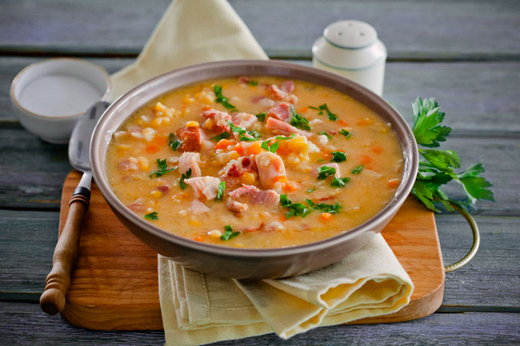
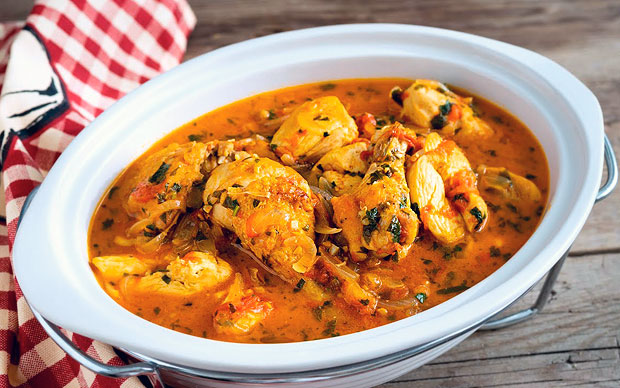
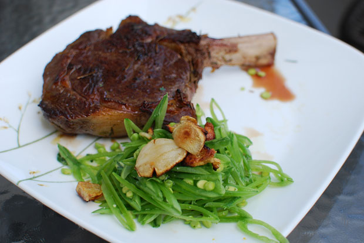

Рецепты
Гороховый суп с копченостями
Представляем кулинарный бренд русской кухни, классический гороховый суп с копченостями – любимое многими блюдо, с ненавязчивым вкусом, питательными свойствами и согревающим эффектом. Рецепт приготовления чрезвычайно прост, с процессом с легкостью справится даже начинающая хозяйка.
Продукты для горохового супа:
- Копченые свиные ребрышки с костями – 400 г
- Свиная грудинка копченая – 250 г
- Горох желтый – 250 г
- Репчатый лук – 1-2 головки
- Морковь – 2 шт
- Картофель – 600 г
- Лавровый лист – 3 шт
- Растительное масло – 2 ст. ложки
- Соль и перец горошком
Пошаговый рецепт:
- В большой кастрюле с водой, лавровыми листьями и перцем горошком отварить копченую свинину в течение 1 часа.
- Процедите бульон и все содержимое кастрюли с помощью дуршлага, костное мясо отделите.
- Перелейте бульон назад, доведите жидкость до кипения, добавьте горох и продолжите варку еще 30 минут. Отделите мясо от костей и поделите ее на небольшие куски, а кости выбросите.
- В сковороде разогрейте масло, обжарьте в нем сначала грудинку, затем лук и морковь, нарезанные небольшими кусочками, пока овощи не станут мягкими.
- Переложите содержимое сковороды в кастрюли с горохом, добавьте картофель, нарезанный средними кусочками. Продолжить приготовление горохового супа еще 30 минут.
- До готовности за 5- 10 минут, по вкусу посолить и поперчить. Подавать блюдо посыпав нарубленной зеленью, вместе с чесноком.
Мы рассмотрели пошаговый рецепт приготовления популярного горохового супа с копченостями. Следуя рецепту, вы без хлопот сможете повторить весь процесс и накормит семью вкусным и сытным обедом.
Чахохбили
Сложно представить вкуснее блюда из курицы и невозможно найти проще рецепта, чем этот. Тушеные кусочки домашней птицы в томатном соусе с чесноком и пряными травами – это и есть легендарный чахохбили по-грузински, несложное в приготовление и доступное по цене.
Продукты необходимые для Чахохбили:
- 1,5 килограммовая тушка курицы
- 3 головка репчатого лука
- 2-3 зубчика чеснока
- 1 пучок петрушки и кинзы
- 4 спелых помидора
- 1 ч. ложка хмели-сунели
- 2 ст. ложки сливового соуса Ткемали
- Соль, сухой черный и стручковый перец – по вкусу
По желанию состав ингредиентов можно расширить и добавить базилик, а также немного аджики. По классическому рецепту, соотношение лука должно быть один к одному с мясом, в конечном результате должна получиться тушеная курица в томатно-луковом соусе.
Пошаговый рецепт:
- Тушку курицы промойте под водой и поделите на средние куски одинакового размера.
- Очистите репчатый лук, поделите головку на 2 части и нарежьте полукольцами.
- Со свежих красных помидоров снимите кожицу и нарежьте на небольшие кусочки.
- Нашинкуйте свежую зелень и нарубите несколько зубчиков чеснока.
- В толстостенной сковороде разогрейте масло. Сначала обжарьте на сильном огне мясо до румяного цвета со всех сторон.
- Затем, добавьте сливочное масло и головку лука, посыпьте соль, перец, хмели-сунели по вкусу и необходимости, выложите помидоры и размешайте. Прикройте крышкой, убавьте огонь и продолжите готовить чахохбили из курицы в режиме тушения – 20 минут.
- И последний шаг: по прошествии времени добавьте грузинский сливовый соус Ткемали, нарубленный зелень и чеснок. Снимите с огня и дайте настояться под крышкой 8-10 минут.
- Подавайте тушеную курицу в соусе из спелых помидор с вашим любимым гарниром, рецепты некоторых из них вы сможете найти на нашем сайте.
Для тех, кто мало знаком с блюдом – это и есть рагу, только чуть в ином исполнение и грузинскими нотками. В действительности рецепт чахохбили простой, как и многие другие блюда из курицы.
Стейк из говядины
Главное правило стейков – это правильный выбор мяса, а после приготовление. Не экономьте на главном продукте, покупайте отборное и молодое мясо. И помните, самый вкусный стейк получается из мраморной говядины на косточке приготовленный на гриле или на чугунной сковороде.
Продукты необходимые для вкусного стейка:
- Говяжье мясо толщиной 2-3 см
- Зубчики чеснока
- Веточки розмарина
- Соль и черный молотый перец
- Растительное масло
Время приготовления: 15 минут.
Если вы желаете приготовить идеальный стейк с румяной корочкой, чтобы была сочная внутри, то обязательно обратите внимание на толщину. Тонкий стейк, получается пережаренным, а излишне толстый – чаще остается сырым внутри.
Пошаговый рецепт:
- Мясо можно предварительно замариновать, но это дело вкуса. С вариантами маринада можете ознакомиться здесь Но, а мы будем готовить без маринада, по быстрому рецепту, дабы сохранить натуральный вкус мяса.
- Прокалите пару столовых ложек масла. Выложите мясо на раскаленную сковороду, к нему сразу же добавьте рубленый чеснок и розмарин.
- Обжарьте на быстром огне до корочки, пропитывая маслом и пряностями. По вкусу приправьте солью и черным свежемолотым перцем.
- Обжарив говядину с каждой стороны до румяной корки, убавьте огонь и дальше готовьте на малом огне – 8-10 минут.
- Степень готовности определяется в каждом случае индивидуально, исключительно по вкусу. Желаете слабо прожаренное мясо, стейк с кровью – готовьте не более 7-8 минут, в некоторых случаях даже меньше. Но, а время приготовления хорошо прожаренного стейка, учитывая толщину – 12-15 минут.
Жареное мясо на сковороде отлично сочетается с томатным соусом, можно кетчуп. Сверху можно положить небольшой кусочек сливочного масла. И перед подачей, дайте пару минут настоятся, накрыв чем-нибудь, так мясо становится нежнее и получается более вкусным.